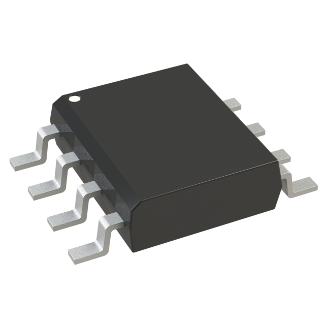
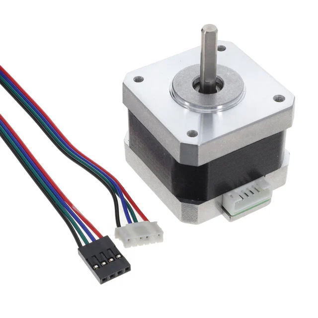
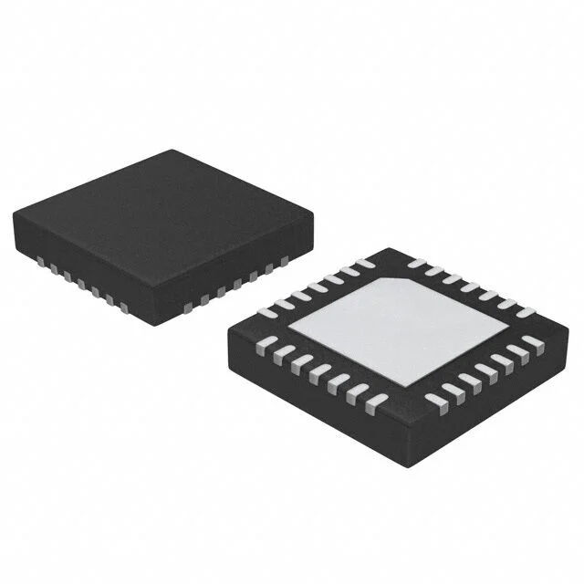
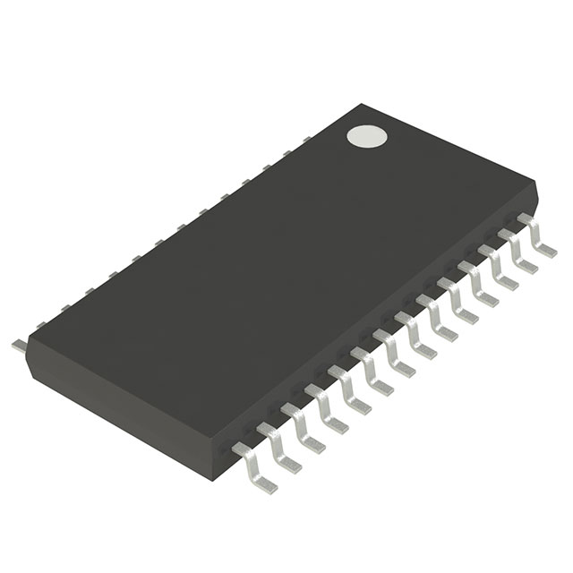
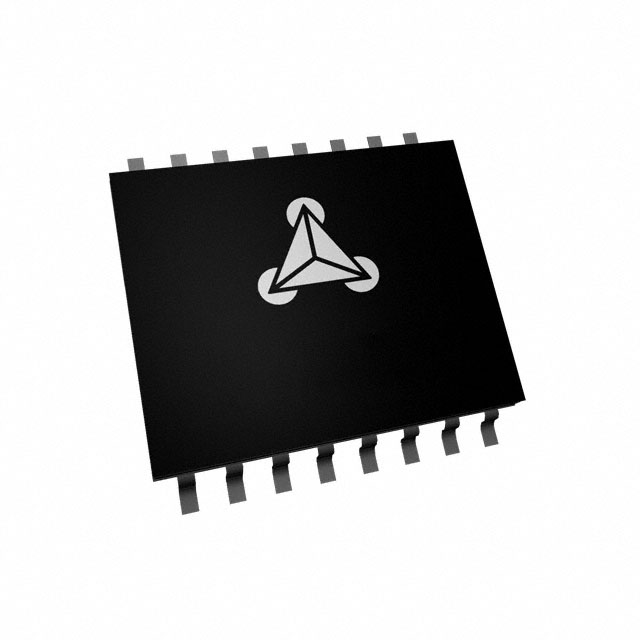
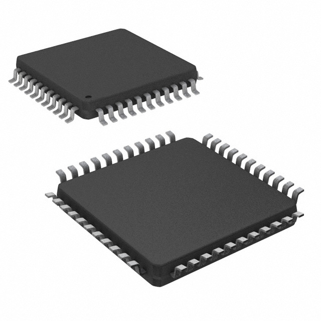
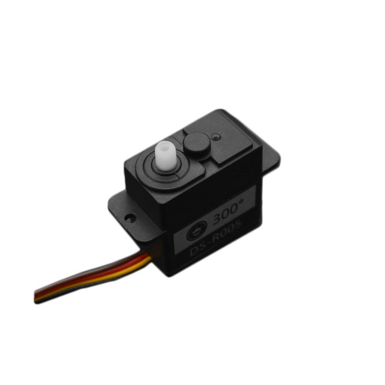
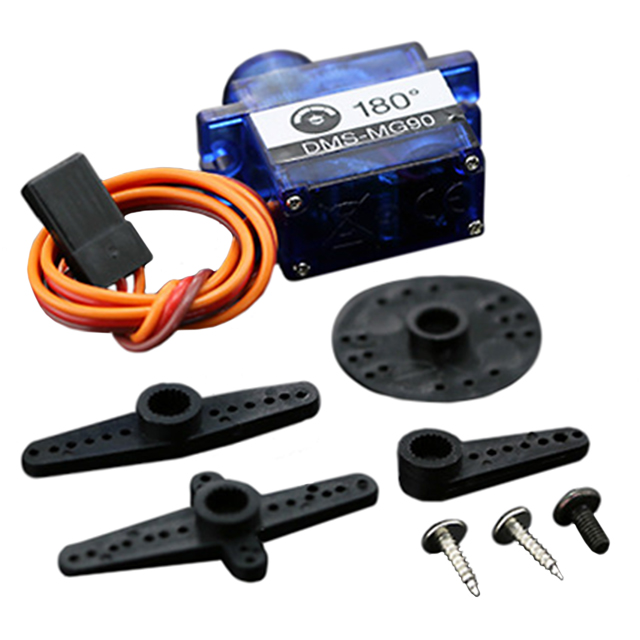

Module's Selected Major Components
Module's Selected Major Components
The following sections are the selected major components necessary for the arm system.
Power Management
3.3V Regulator
Table 1: 3.3V Regulator component selection
5V Regulator
Table 2: 5V Regulator component selection
|Component |Pros |Cons |
| --------------------------------------------------------------------------------------------------------------------------------------------------------------------------------- | --------------------------------------------------------------------------------------------------------------------------------------------------- | ------------------------------------------------------ |
| 
AP1509-50SG-13 IC REG BUCK 5V 2A 8SOP
$1.21/each
link to product|* 8SOP package fairly easy to manually solder.
* 2A is more than enough to drive three 5V RC Servos.
* More efficient than linear regulator.|* Requires more complex circuity than linear regulator.|
{kind=link}
Arm Actuation
Primary actuator
Table 3: Primary actuators component selection
| Component | Pros | Cons |
| ------------------------------------------------------------------------------------------------------------------------------------------------------------------------------------------------- | ------------------------------------------------------------------------------------------------------------------ | --------------------------------------------------------------------------------------------------- |
| 
SM-42HB34F08AB STEP MOTOR HYBRID BIPOLAR 12VDC
$11.84/each
link to product | * Inexpensive
* High holding torque 31.15 oz-in easier to implement without gearbox
| * Limited datasheet page|
{kind=link}
Primary actuator controller
| Component | Pros | Cons |
|---|---|---|
 A4988SETTR-T IC MTR DRVR BIPOLAR 3-5.5V 28QFN $11.84/each link to product |
* Lots of documentation to help implement. * Works within same voltage level as selected ESP32 microcontroller. * Can control selected bipolar primary actuator with reasonable accuracy. |
* No serial communication options: only logic using 7 wires. * Expensive compared to simpler options. |
 TMC2225-SA-T IC MTR DRV 4.75-36V HTSSOP28 $4.61/each link to product |
* Relatively inexpensive compared to other TMC controllers. * Ultra silent control. * Works within same voltage level of microcontroller. * More than enough maximum current output to control selected stepper motor. * Uses UART serial communication protocol. |
* Does not fulfill requirement of using SPI or I2C. |
 505-TMC4210-I-ND IC MTR DRV BIPOLAR 3.3-5V 16SSOP $8.55/each link to product |
* Uses SPI * Device takes computational load off of microcontroller for STEP/DIR control |
* Still requires motor driver to control stepper motor. |
 TMC260C-PA IC MTR DRV BIPOLAR 3-5.25V 44QFP $10.12/each link to product |
* Uses SPI and Step/Dir control. * Operates within 3.3V, same as microcontroller. *Can supply 2A, well above absolute max draw of selected stepper motor. |
* Expensive compared to other options. |
| ### Secondary actuators |
{kind=link}
{kind=link}
{kind=link}
{kind=link}
Table 2: Secondary actuators component selection
| Component | Pros | Cons |
| ------------------------------------------------------------------------------------------------------------------------------------------------------------------------------------------------- | ------------------------------------------------------------------------------------------------------------------- | --------------------------------------------------------------------------------------------------- |
|  
SER0056 2KG 300 CLUTCH SERVO
\(6/each<br>[link to product](https://www.digikey.com/en/products/detail/dfrobot/SER0056/13545236) | \* Inexpensive<br>\* High torque<br>\*Clutch system and electrical protection prevents damage to motor when motor is blocked from rotating.<br> \* 300 degree range.<br> \* Easy to control with PWM signal.<br>\* Plastic gears make servo lighter, self lubricating, and more vibration dampening.<br> | \* Cannot meet serial communication for actuator requirement.<br>\* 300 degree range is superfluous for design as only 180 degrees is required.<br>|
| <br> SER0011 SERVOMOTOR RC 6V MICRO METAL GEAR<br>\)8.62/each
link to product | * Fairly inexpensive
* 2.5 kg torque
* Metal gears less likely to be stripped by softer structural links attached to motor. | *Cannot meeet serial communication for actuator requirement.|
|
SER0039 SERVOMOTOR RC 5V 9G METAL GEAR
$5.90/each
link to product| * Operates at more standard voltage for which there are inexpensive off the shelf regulators. | * Suffers from backlash and angles not as accurate as stepper or higher precision servo. |
{kind=link}
{kind=link}
Selected component: SER0039 SERVOMOTOR RC 5V 9G METAL GEAR * $5.90/each * link to product * Reasoning: The other considered servomotors have enticing features but would require a non-standard and expensive 6V regulator with at least 1A of output because all three servos in a 3 degree of freedom manipulator stalled would pull ~900mA total. This one operates at 5V making it easier to select a buck converter that can supply enough current for it.